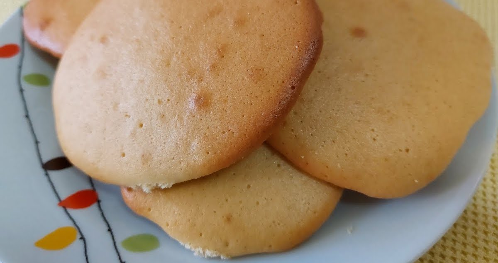

Doces · Biscoitos
Esquecidos

Ingredientes
- 1 1/2 xícara de açúcar
- 4 gemas
- 1 clara
- 4 xícaras de farinha de trigo
- 1 pitada de sal
- 1 colher (sopa) de água
- Manteiga para untar
- Farinha de trigo para polvilhar
Modo de preparo
- Preaqueça o forno em temperatura média (180 °C). Bata açúcar e gemas na batedeira em velocidade média até creme esbranquiçado.
- Acrescente a clara e bata mais 5 minutos.
- Desligue, junte farinha peneirada e sal; misture à mão até massa que possa ser enrolada (use água se necessário).
- Faça bolinhas pequenas e disponha afastadas em duas assadeiras untadas e enfarinhadas. Asse 25 minutos. Deixe esfriar e congele.
Observação: Congelamento: saco plástico sem ar, etiquetado. Descongelamento: temperatura ambiente por 1 hora e 6 minutos no forno. Polvilhe as mãos com farinha ao enrolar — a massa é mole.